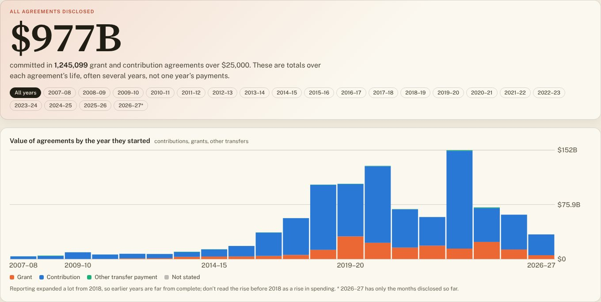

Follow the dollar · grants
Federal grants and contributions

Explore every grant and contribution →Federal departments have disclosed 1,245,122 grant and contribution agreements over $25,000, worth $977.2 billion in total commitments. These are totals over each agreement’s life, often several years, not one year’s payments; disclosure expanded a lot from 2018, so earlier years are incomplete.
Largest recipients
| Recipient (as disclosed) | All years |
|---|---|
| Government of Ontario - Ministry of Health and Long-Term Care | $30.6 billion |
| Gouvernement du Québec - Ministère de la santé et des Services sociaux | $19.8 billion |
| First Nations Health Authority | $17.1 billion |
| NEXTSTAR ENERGY INC. | $15.1 billion |
| PowerCo Canada Inc. | $13.9 billion |
| Government of British Columbia - Ministry of Health | $13.3 billion |
| Government of Quebec | $11.7 billion |
| MINISTRE DES FINANCES DU QUÉBEC | $11.1 billion |
| Government of Ontario | $10.4 billion |
| Government of Alberta - Ministry of Health | $9.0 billion |
| Ontario | $8.5 billion |
| Canada Foundation For Innovation | $7.5 billion |
Each agreement counted once at its latest amendment. Many small payments reported as “batch reports” are kept separate. Source: Government of Canada, Proactive Disclosure of Grants and Contributions (open.canada.ca).
Explore every grant and contribution →